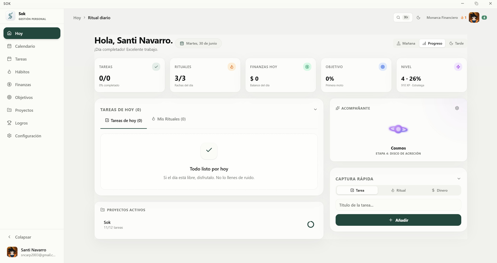

Sok unifica tus tareas, proyectos y rutinas en una sola app.
Web, móvil y escritorio en perfecta sincronía.

Diseñado para personas que quieren hacer más sin complicarse.
Creá, organizá y completá tareas con prioridades, fechas límite y etiquetas de colores. Vista lista, kanban o calendario — como prefieras.
Agrupá tareas por proyectos con tableros Kanban y seguimiento de progreso en tiempo real.
Interfaz limpia y enfocada. Sin notificaciones molestas, sin funciones que nunca vas a usar.
Creá rutinas diarias y seguí tu racha. Construí hábitos que duran con recordatorios inteligentes.
Tus datos viajan entre web, móvil y escritorio sin fricción. Empezá en el celular, continuá en la PC.
Lista, tablero o calendario. Ordená, filtrá y agrupá tus tareas de la manera que tiene más sentido para vos.
App nativa para Windows con modo offline, atajos de teclado y actualizaciones automáticas.
DisponibleApp para iOS y Android. Gestioná tus tareas en cualquier lugar con notificaciones push.
PróximamenteAccedé desde cualquier navegador sin instalar nada. Siempre sincronizado con tus otros dispositivos.
PróximamenteDescargá Sok gratis. Sin suscripción, sin tarjeta de crédito.
Instalador firmado · Actualizaciones automáticas incluidas
Cada actualización, documentada. Sok mejora constantemente.